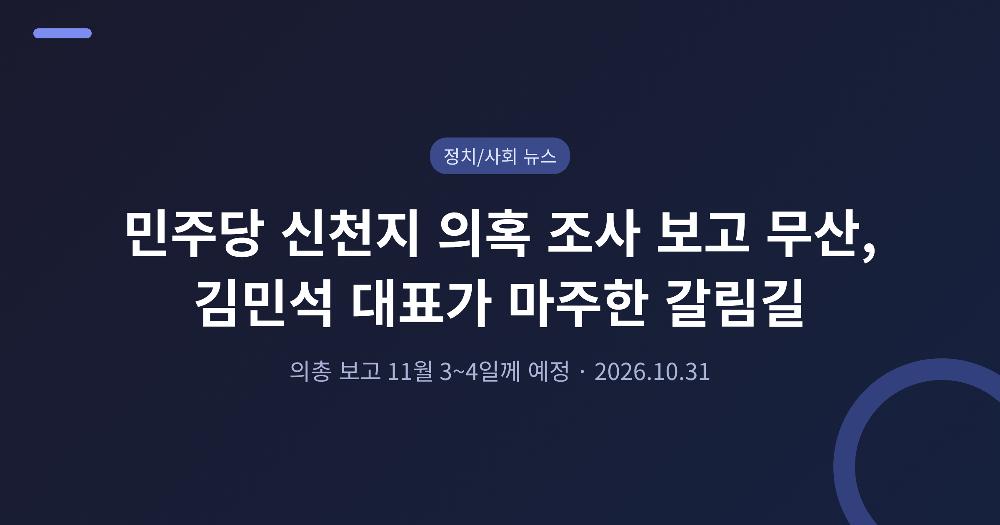
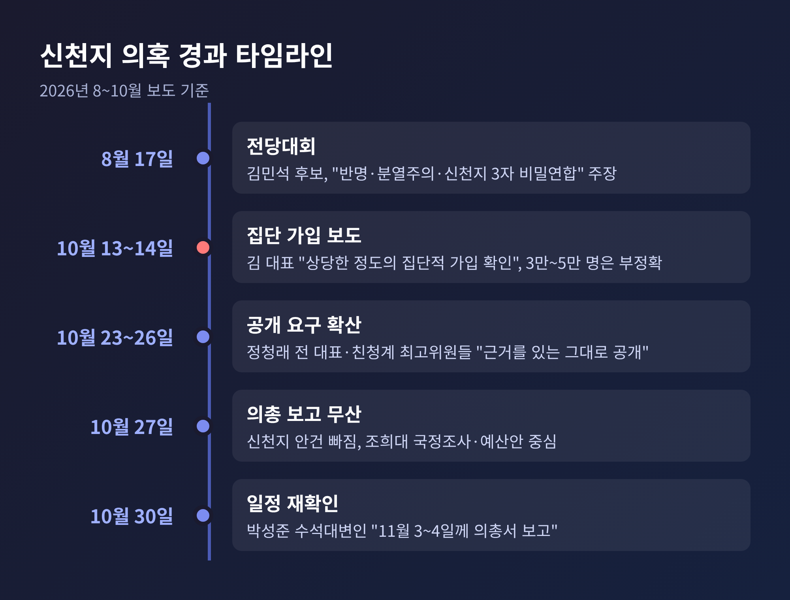
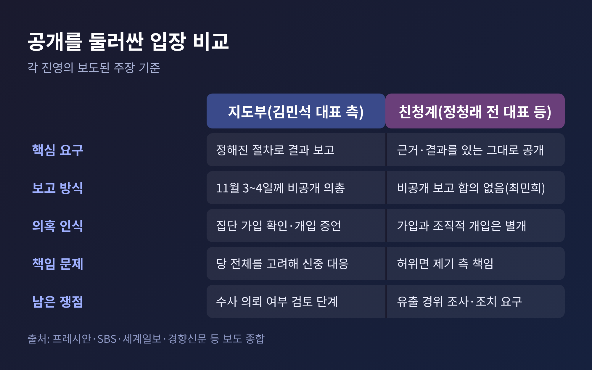
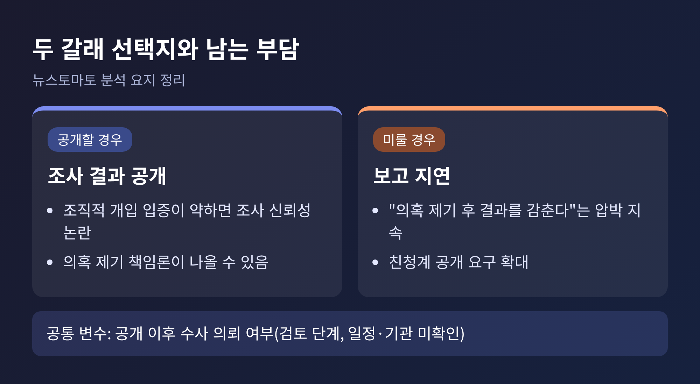
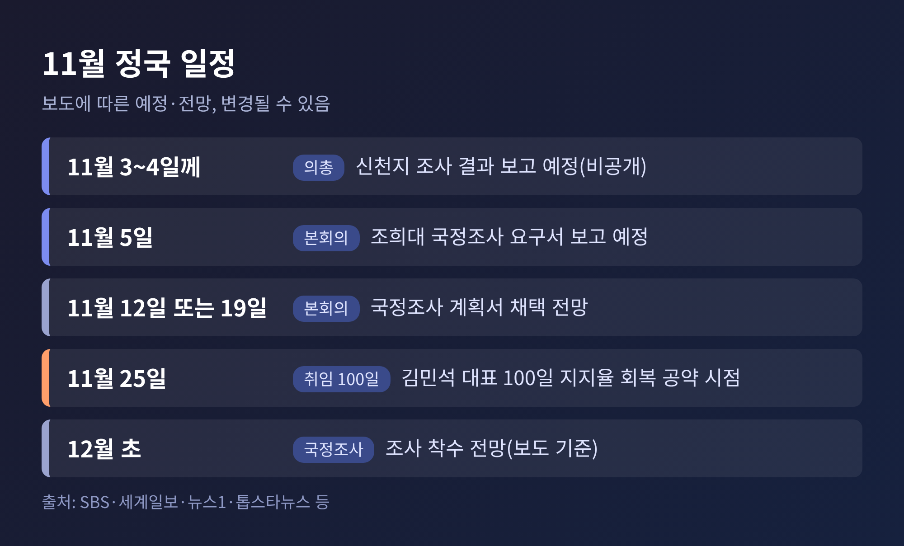

민주당 신천지 의혹 조사 보고 무산, 김민석 대표가 마주한 갈림길

3줄 요약
- 10월 27일 민주당 의원총회에서 신천지 당원 가입 의혹 조사 결과 보고가 이뤄지지 않았습니다.
- 지도부는 11월 3~4일께 비공개 의총에서 보고하겠다고 밝혔고, 친청계는 근거를 있는 그대로 공개하라고 압박합니다.
- 조희대 대법원장 국정조사 등 굵직한 현안이 겹쳐, 보고 이후의 파장이 11월 정국의 변수로 떠올랐습니다.
오늘은 더불어민주당 신천지 의혹 조사 결과 보고가 왜 무산됐는지, 그리고 당이 어디로 향하는지를 정리해 보려 합니다. 먼저 바로잡을 점이 있습니다. 보도에서 '진퇴양난'에 놓였다고 한 김민석 씨의 직책은 총리가 아니라 더불어민주당 대표입니다. 이 글은 보도된 사실만 근거로 쓰며, 의혹은 어디까지나 의혹으로 다룹니다.
무슨 일이 있었나: 예정된 보고가 나오지 않았습니다
10월 27일 오후, 민주당 의원총회가 열렸습니다. 신천지 관련 조사 결과가 보고될 것이라는 관측이 있었지만, 안건에 오르지 않았습니다.
전은수 원내대변인은 의총 직후 "신천지 얘기는 나오지 않았다"는 취지로 답했습니다. 김건희 씨 관련 사안에 집중했다는 설명이 덧붙었습니다. 서미화 최고위원도 보고가 있었느냐는 질문에 "없었다"고 했습니다.
뉴스토마토는 이날 이를 '돌연 무산'이라 보도했고, 김민석 대표가 '진퇴양난'에 놓였다고 짚었습니다. 의총에서는 조희대 대법원장 국정조사 추진과 내년도 예산안 심사 등이 다뤄졌습니다.

의혹은 어디서 시작됐나
발단은 지난 8월 17일 전당대회 국면입니다. 김민석 후보는 '반명·분열주의·신천지 3자 비밀연합'을 깨는 것이 이번 전당대회의 본질이라고 주장했습니다. 발언 시점을 7월로 적은 보도도 있어 소스마다 표기가 엇갈립니다. 당선 뒤 박선원 최고위원을 단장으로 하는 당원정비 TF가 꾸려졌습니다.
10월 13일에는 신천지 신도 3만~5만 명이 집단 가입했다는 보도가 나왔습니다. 이튿날 김 대표는 당 유튜브에서 "상당한 정도의 집단적 가입이 있다는 것은 확인됐다"고 말했습니다. 조직적 개입을 시사하는 증언도 확보했다고 했습니다. 다만 3만~5만 명이라는 숫자는 조사 결과가 아닌 추정이며 정확하지 않다고 선을 그었습니다.
이후 27일에는 '1만 명 이상'이라는 보도가 다시 나왔습니다. 가입 규모에 대해 공식 확인된 수치는 아직 없습니다. 이 점은 뒤에서 다시 짚겠습니다.
친청계는 무엇을 요구하나
정청래 전 대표와 한민수·최민희·이성윤 최고위원 등 친청(친정청래)계는 조사 결과를 있는 그대로 공개하라고 요구합니다. 정 전 대표는 "덮는 자가 범인"이라는 표현까지 썼습니다.
한 최고위원이 던진 질문은 구체적입니다. 신천지 교인이 조직적으로 입당했는지, 입당 시점은 언제인지, 전당대회에서 실제로 투표한 인원은 몇 명인지를 밝히라는 것입니다. 3자 비밀연합이 있었다면 책임을 묻고, 허위 주장이었다면 그 책임도 물어야 한다는 입장입니다.
이들은 교인의 당원 가입 정황과 '조직적 전당대회 개입'은 별개의 문제라고 반박합니다. 이성윤 최고위원은 10월 30일 최고위에서 의혹이 언론에 흘러나온 경위를 조사하고 조치하라고도 요구했습니다.
지도부는 어떻게 답했나
지도부의 설명은 일정에 초점이 맞춰져 있습니다. 박성준 수석대변인은 애초 국정감사가 끝난 뒤 11월 중 비공개 의총에서 TF 결과를 보고할 계획이었다고 밝혔습니다. 공개 요구가 이어지자 보고 시점을 앞당겼습니다.
10월 30일 박 수석대변인은 11월 5일 본회의 전, 3일이나 4일께 열릴 의총에서 결과를 보고하겠다고 했습니다. 지난 의총에서 빠진 이유로는 김건희 씨 구속·석방 문제 등 현안이 컸다는 점을 들었습니다. 지도부 관계자는 "김 대표가 엄중히 보고 있다"며 지켜봐 달라고 당부했다고 전해집니다.
다만 보고 방식을 두고는 이견이 남았습니다. 지도부는 '비공개 의총'을 말하지만, 최민희 최고위원은 최고위에서 합의된 바 없다고 반박했습니다.

왜 '진퇴양난'이라고 불리나
뉴스토마토가 짚은 딜레마는 두 갈래입니다.
공개할 경우, 조직적 전당대회 개입을 입증하지 못하면 조사의 신뢰성이 흔들립니다. 의혹을 앞서 제기한 쪽에 정치적 책임론이 나올 수 있습니다. 반대로 미루면, 의혹을 제기해 놓고 결과를 감춘다는 압박이 이어집니다. 공개한 뒤에도 수사 의뢰 여부를 둘러싼 부담이 남습니다.
'진퇴양난'이라는 표현에는 주의가 필요합니다. 데일리안은 이 표현이 친청계 관계자의 주장에서 나왔다고 전합니다. 실체 없는 의혹을 정적 제거용으로 꺼냈다면 곤경이라는 가정이 깔려 있습니다. 반면 지도부는 집단 가입이 이미 확인됐다는 입장입니다. 어느 쪽이 맞는지는 결과가 공개돼야 가려집니다.
경향신문 사설은 다른 각도에서 접근했습니다. 결과를 선별적으로 공개하지 말고 전부 밝히되, 자체 조사에 한계가 있다면 수사기관에 의뢰하라는 주문입니다. 한국일보는 지도부가 수사 의뢰를 검토 중이라고 전했지만, 구체적인 일정이나 기관은 확인되지 않습니다.

왜 중요한가: 지지율과 계파, 두 가지 시험대
첫째는 지지율입니다. 한국갤럽 10월 27~29일 조사에서 민주당 지지율은 35%로, 8월 셋째 주 41%보다 6%포인트 낮았습니다. 한국사회여론연구소 조사(10월 26~27일)에서는 31.5%로 직전보다 3.4%포인트 내렸습니다. 조사 기관마다 방식이 달라 직접 비교는 어렵습니다.
김 대표는 취임 후 100일 안에 지지율을 10%포인트 회복하겠다고 공언했습니다. 취임 100일은 11월 25일입니다. 정청래 전 대표는 10월 31일 유튜브 방송에서 100일이 지나면 평가가 갈릴 것이라고 말했습니다. 당대표 재출마를 공식 선언한 것은 아닙니다.
둘째는 계파입니다. 8월 전당대회에서 경쟁했던 두 진영이 신천지 의혹을 매개로 다시 부딪히고 있습니다. 한국일보에 따르면 안규백·조승래·김영배 의원 등은 의총에서 단합과 공동 책임을 강조했습니다. 갈등을 키우지 말자는 목소리와 공개를 서두르라는 목소리가 함께 있는 셈입니다.
함께 얽힌 쟁점: 조희대 대법원장 국정조사
신천지 보고가 밀린 날, 의총의 중심은 조희대 대법원장 국정조사였습니다. 민주당은 10월 27일 국정조사를 우선 추진하기로 뜻을 모았습니다.
보도된 사유는 대법관 후보자 제청 지연 경위, 업무추진비 집행 의혹, 국정감사 증인 선서 거부 경위 등입니다. 한병도 원내대표는 사법 공백 해소 책임을 다했는지 규명해야 한다고 주장했습니다. 대법원장을 대상으로 한 국정조사가 실시되면 전례 없는 일이라는 보도가 있었습니다.
일정은 11월 5일 본회의에 요구서를 보고하고, 계획서 의결은 12일 또는 19일로 예상됩니다. 12월 초 조사 착수가 전망됩니다. 매체마다 '계획서 5일 처리 목표'와 '요구서 5일 보고'로 표현이 갈려, 5일 보고 후 순차 진행으로 정리했습니다.
국민의힘은 강하게 반발합니다. 정점식 원내대표는 국정조사 추진을 위헌이자 사법부 탄압, 삼권분립 위반이라고 비판했고, 모든 수단을 동원해 맞서겠다고 밝혔습니다. 당내에서도 의견이 한결같지는 않습니다. 김기표 의원은 단체 대화방에서 곧바로 탄핵에 나서야 한다고 했고, 이성윤 최고위원도 탄핵 착수를 주장했습니다. 당 관계자는 이를 개인 의견이라 선을 그으며 전체 분위기는 국정조사라고 설명했습니다.
한 가지 짚어둘 점이 있습니다. 국정조사 추진은 정치권의 문제 제기이며, 그 자체가 위법행위를 입증하는 것은 아닙니다.

앞으로의 전망: 확인되지 않은 것과 지켜볼 것
아직 확인되지 않은 것이 많습니다. 조사 결과의 실제 내용, 가입 규모, 조직적 개입의 증거 수준은 공개되지 않았습니다. 보고가 비공개 의총에서 이뤄지면 내용이 어디까지 외부로 알려질지도 변수입니다. 김 대표가 10월 14일 밝힌 대로 의총 보고 시에는 상당 부분 공개될 것이라는 언급이 있었습니다.
지켜볼 대목은 세 가지입니다.
- 11월 3~4일 의총에서 실제 보고가 이뤄지는가
- 보고 내용에 가입 규모, 시점, 전당대회 투표 참여 여부가 담기는가
- 수사 의뢰나 고발로 이어지는가
국민의힘은 앞서 10월 14일 특검 수사와 압수수색을 포함한 철저한 수사를 촉구한 바 있습니다. 보고 이후 야당의 공세가 거세질 가능성도 배제하기 어렵습니다. 반대로 결과가 기대에 못 미친다면 책임 공방이 불가피합니다.
끝으로 한 마디만 더 드리겠습니다. 이번 일은 의혹이 사실인지에 앞서, 당이 그 사실을 어떻게 다루는지를 묻고 있습니다.
"의혹은 근거로 답할 때 정리됩니다."
11월 3일 이후 어떤 숫자와 문장이 공개되는지, 그때 다시 이 사안을 짚어보시길 권합니다.
참고 출처: 뉴스토마토(10/27), 프레시안(10/27, 10/30), 한국일보(10/27), 뉴데일리(10/27), 데일리안(10/28), 주간경향(10/25), 경향신문(10/14, 10/26), 더팩트(10/15), SBS(10/30), 세계일보(10/31), 법률신문(10/27), 파이낸셜뉴스·뉴스1(10/28), PPSS(10/27), 톱스타뉴스(10/31)